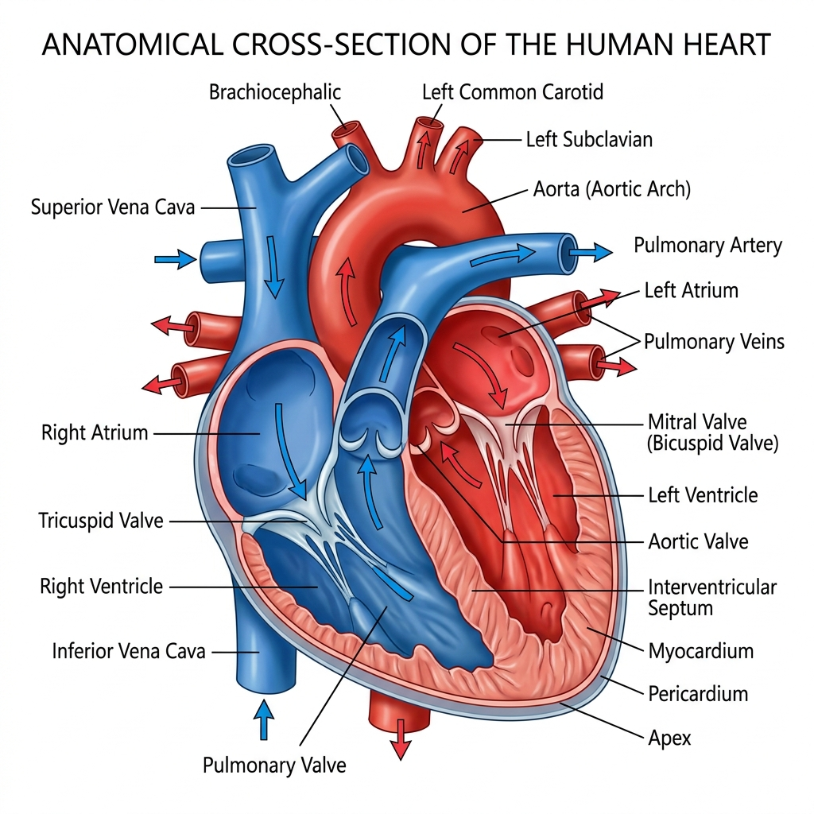
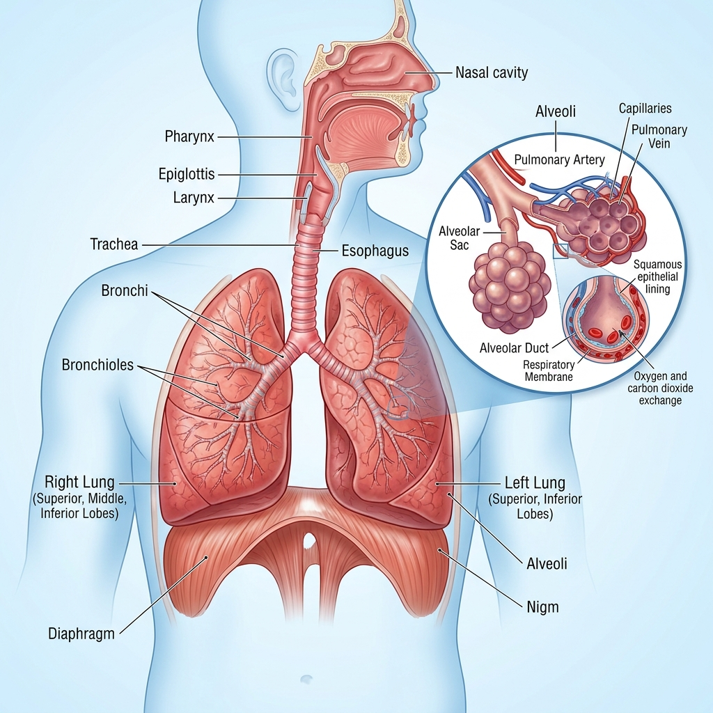
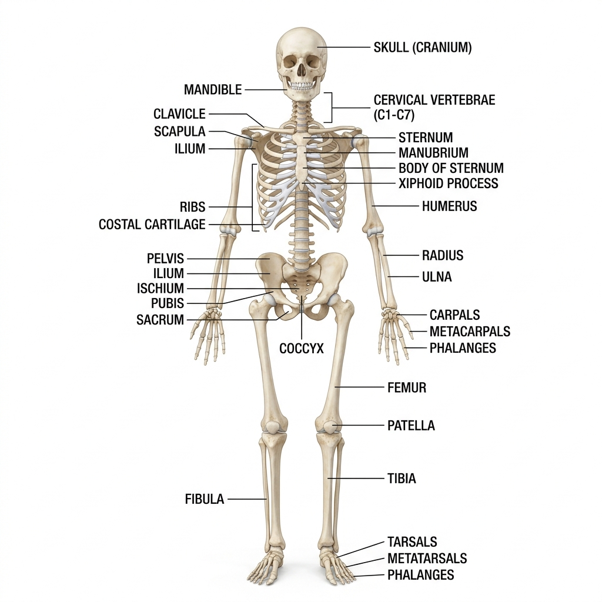
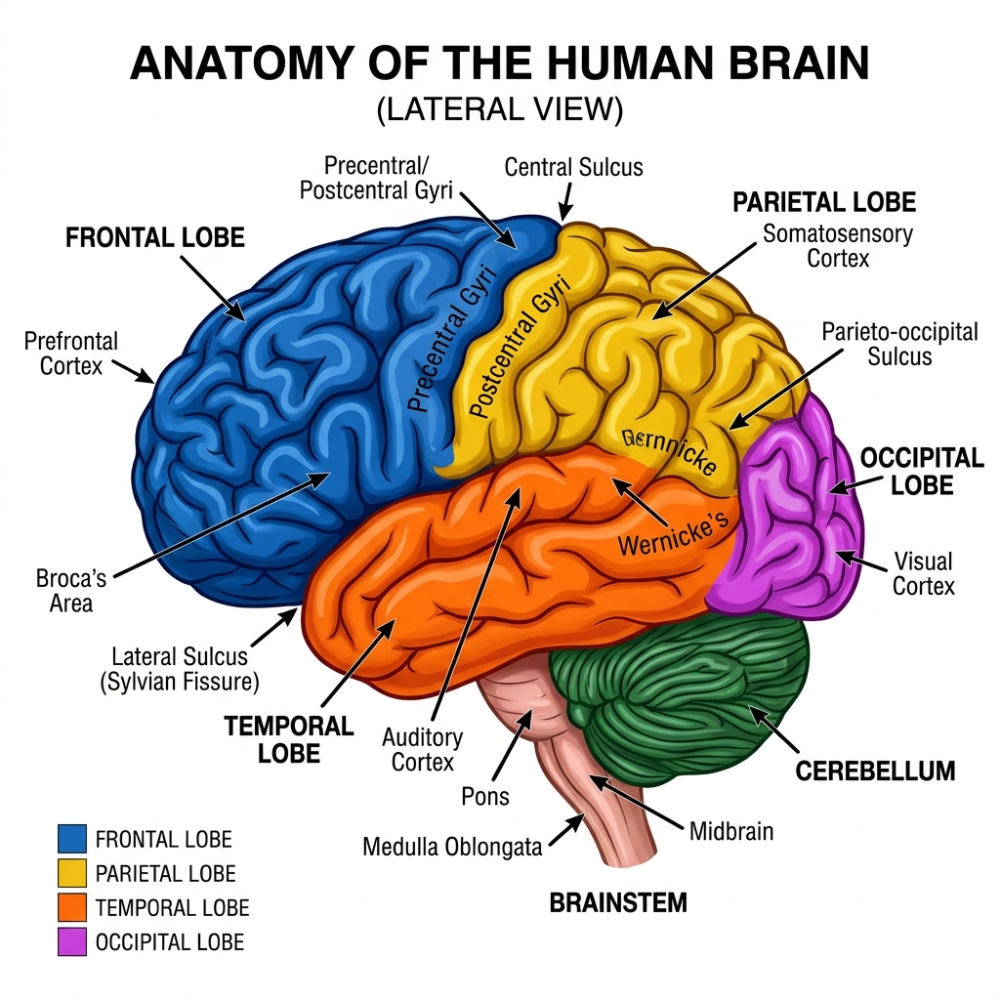

Sistem Kardiovaskular
Jantung, Pembuluh Darah & Sirkulasi
Sistem kardiovaskular (jantung-pembuluh darah) berfungsi memompa dan mendistribusikan darah ke seluruh tubuh, membawa oksigen, nutrisi, dan membuang produk metabolisme.

🫀 Anatomi Jantung
Jantung adalah organ otot berongga sebesar kepalan tangan yang terletak di mediastinum (ruang antara kedua paru-paru), sedikit condong ke kiri.
Jumlah Ruang
4 Ruang
Berat Jantung
250–350 g
HR Normal
60–100 bpm
Curah Jantung
~5 L/menit
📋 4 Ruang Jantung
Atrium Kanan (Dekstra)
- Menerima darah kotor (vena) dari seluruh tubuh
- Masuk via Vena Cava Superior & Inferior
- Memompa darah → Ventrikel Kanan
Ventrikel Kanan
- Memompa darah ke paru-paru
- Via Arteri Pulmonalis (darah kotor)
- Dinding lebih tipis dari ventrikel kiri
Atrium Kiri (Sinistra)
- Menerima darah bersih dari paru-paru
- Masuk via 4 Vena Pulmonalis
- Memompa darah → Ventrikel Kiri
Ventrikel Kiri
- Memompa darah ke seluruh tubuh
- Via Aorta (arteri terbesar)
- Dinding paling tebal (tekanan tinggi)
🔄 Katup Jantung
| Katup | Lokasi | Fungsi | Auskultasi |
|---|---|---|---|
| Mitral (Bikuspid) | Antara Atrium kiri – Ventrikel kiri | Mencegah aliran balik ke atrium kiri | Apex (ICS 5 midclavicular kiri) |
| Trikuspid | Antara Atrium kanan – Ventrikel kanan | Mencegah aliran balik ke atrium kanan | ICS 4–5 sternal kiri bawah |
| Aorta | Antara Ventrikel kiri – Aorta | Mencegah aliran balik dari aorta | ICS 2 sternal kanan |
| Pulmonal | Antara Ventrikel kanan – A. Pulmonalis | Mencegah aliran balik dari A. Pulmonalis | ICS 2 sternal kiri |
🩸 Sirkulasi Darah
Sirkulasi Pulmonal (Kecil)
- Ventrikel kanan → A. Pulmonalis
- Paru-paru (pertukaran gas)
- V. Pulmonalis → Atrium kiri
- Tujuan: oksigenasi darah
Sirkulasi Sistemik (Besar)
- Ventrikel kiri → Aorta
- Seluruh organ & jaringan tubuh
- V. Cava → Atrium kanan
- Tujuan: suplai O₂ ke seluruh tubuh
Sirkulasi Koroner
- Nutrisi untuk otot jantung sendiri
- A. Koronaria kiri: LAD, LCx
- A. Koronaria kanan: RCA
- Sumbatan → Serangan Jantung (IMA)
Sistem Pernapasan
Paru-paru, Saluran Napas & Pertukaran Gas
Sistem pernapasan berfungsi untuk pertukaran gas antara tubuh dengan lingkungan: memasukkan O₂ (oksigen) ke dalam darah dan mengeluarkan CO₂ (karbon dioksida) dari darah.

🫁 Anatomi Sistem Pernapasan
Sistem pernapasan dibagi menjadi saluran napas atas (hidung, faring, laring) dan saluran napas bawah (trakea, bronkus, bronkiolus, alveoli, paru-paru).
Jumlah Alveoli
~300 juta
Luas Permukaan
70–80 m²
RR Normal Dewasa
12–20 x/mnt
Volume Tidal
~500 mL
📍 Struktur Saluran Napas
Saluran Napas Atas
- Hidung (cavum nasi) — filter, hangatkan, lembabkan
- Faring (nasofaring, orofaring, laringofaring)
- Laring (kotak suara) — epiglotis mencegah aspirasi
Trakea & Bronkus
- Trakea: panjang 10-12 cm, cincin kartilago C
- Bifurkasio trakea di carina (TH4-5)
- Bronkus utama kanan lebih lurus (risiko aspirasi)
Bronkiolus & Alveoli
- Bronkiolus terminalis — tidak ada kartilago
- Alveoli: kantong udara tipis, satu lapis sel
- Dilapisi surfaktan (cegah kolaps)
🔄 Mekanisme Pernapasan
Inspirasi (Menghirup)
- Diafragma kontraksi → turun
- Otot interkostal eksternal kontraksi
- Rongga toraks membesar
- Tekanan intrapleura turun
- Udara masuk ke paru-paru
Ekspirasi (Menghembuskan)
- Diafragma relaksasi → naik
- Otot interkostal relaksasi
- Rongga toraks mengecil
- Tekanan intrapleura naik
- Udara keluar dari paru-paru
Pertukaran Gas (Alveoli)
- O₂ berdifusi dari alveoli → kapiler darah
- CO₂ berdifusi dari darah → alveoli
- Prinsip: difusi tekanan parsial
- PaO₂ normal: 80-100 mmHg
- PaCO₂ normal: 35-45 mmHg
📊 Volume & Kapasitas Paru
| Parameter | Nilai Normal | Deskripsi |
|---|---|---|
| Volume Tidal (TV) | 500 mL | Volume napas normal satu kali |
| Kapasitas Residual Fungsional (FRC) | 2.500 mL | Volume udara setelah ekspirasi normal |
| Kapasitas Vital (VC) | 4.500 mL | Maksimal ekspirasi setelah inspirasi maksimal |
| Kapasitas Total Paru (TLC) | 6.000 mL | Total kapasitas paru-paru |
| Volume Cadangan Ekspirasi (ERV) | 1.200 mL | Volume tambahan yang dapat diekspirasi paksa |
Sistem Muskuloskeletal
Tulang, Otot, Sendi & Jaringan Penunjang
Sistem muskuloskeletal terdiri dari tulang (206 pada dewasa), otot (>600 jenis), sendi, dan jaringan ikat. Berfungsi untuk gerak, postur, perlindungan organ vital, dan hematopoiesis.

🦴 Rangka Manusia
Sistem rangka terbagi menjadi kerangka aksial (80 tulang: tengkorak, tulang belakang, tulang dada, dan rusuk) dan kerangka apendikular (126 tulang: anggota gerak atas dan bawah).
Total Tulang Dewasa
206 tulang
Total Otot
>600 jenis
Tulang Terpanjang
Femur (paha)
Tulang Terkecil
Stapes (telinga)
🗂️ Klasifikasi Tulang
Berdasarkan Bentuk
- Tulang panjang: femur, humerus, tibia
- Tulang pendek: karpal, tarsal
- Tulang pipih: sternum, skapula, tulang tengkorak
- Tulang ireguler: vertebra, tulang wajah
- Tulang sesamoid: patela
Kerangka Aksial (80 Tulang)
- Tengkorak: 22 tulang
- Tulang belakang: 26 (C7, T12, L5, S1, Co1)
- Sternum: 3 bagian
- Costae (rusuk): 12 pasang
- Tulang hyoid: 1
Sendi (Articulatio)
- Sinartrosis: tidak bergerak (sutura tengkorak)
- Amfiartrosis: gerak terbatas (simfisis pubis)
- Diartrosis: gerak bebas (lutut, bahu, pinggul)
- Tipe diartrosis: peluru, engsel, putar, kondiloid
💪 Jenis Otot Tubuh
| Jenis Otot | Lokasi | Kontrol | Ciri Khas |
|---|---|---|---|
| Otot Rangka (Skeletal) | Melekat pada tulang | Volunter (sadar) | Lurik, multinuklei, cepat lelah |
| Otot Jantung (Kardiak) | Dinding jantung | Involunter (otomatis) | Lurik, uninuklei, gap junction, tanpa henti |
| Otot Polos (Visceral) | Organ dalam, pembuluh darah | Involunter | Tidak lurik, kontraksi lambat & berkelanjutan |
Sistem Saraf
Otak, Korda Spinalis & Saraf Perifer
Sistem saraf merupakan pusat kendali tubuh yang mengatur semua fungsi fisiologis. Terdiri dari SSP (Susunan Saraf Pusat) dan SST (Susunan Saraf Tepi).

🧠 Otak Manusia
Otak manusia terdiri dari serebrum (otak besar), serebelum (otak kecil), dan batang otak. Memiliki berat sekitar 1,3–1,4 kg dan berisi sekitar 86 miliar neuron.
Berat Otak
1,3–1,4 kg
Jumlah Neuron
~86 miliar
Volume CSF
~150 mL
Konsumsi O₂
20% total tubuh
🗺️ Lobus Serebrum & Fungsinya
Lobus Frontal
- Kepribadian & perilaku
- Perencanaan & pengambilan keputusan
- Bahasa ekspresif (area Broca)
- Korteks motorik primer (gerak volunter)
Lobus Parietal
- Korteks sensorik somatik
- Persepsi nyeri, suhu, sentuhan
- Orientasi spasial
- Integrasi informasi sensorik
Lobus Temporal
- Pendengaran (auditorik)
- Bahasa reseptif (area Wernicke)
- Memori jangka panjang
- Emosi (amigdala)
Lobus Oksipital
- Penglihatan (visual korteks)
- Interpretasi visual
- Persepsi warna dan bentuk
Sistem Pencernaan
GI Tract, Organ Aksesori & Proses Digesti
Sistem pencernaan memecah makanan menjadi nutrisi yang dapat diserap tubuh. Terdiri dari saluran GI (mulut → anus) sepanjang ±9 meter dan organ aksesori (hati, pankreas, kandung empedu).
📍 Organ Pencernaan Urut
Mulut → Esofagus
- Mulut: mastikasi (mengunyah) + amilase saliva
- Faring: persimpangan GI & respirasi
- Esofagus: 25 cm, gerakan peristaltik
- Sfingter esofagus bawah (LES) mencegah refluks
Lambung (Gaster)
- Kapasitas: 1–1,5 L
- Produksi: HCl (pH 1,5–3,5) + pepsin
- Mencerna protein
- Menghasilkan faktor intrinsik (penyerapan B12)
- Fundus, korpus, antrum, pylorus
Usus Halus (3 segmen)
- Duodenum (25 cm): penerima enzim pankreas+empedu
- Jejunum (~2,5 m): penyerapan utama nutrisi
- Ileum (~3,5 m): penyerapan B12 & garam empedu
- Total luas absorpsi: ~250 m² (ada vili & mikrovili)
Usus Besar & Organ Aksesori
- Kolon: penyerapan air & elektrolit, pembentukan feses
- Rektum & anus: eliminasi feses
- Hati: produksi empedu, metabolisme, detoksifikasi
- Pankreas: enzim pencernaan + insulin/glukagon
🧪 Enzim Pencernaan Utama
| Enzim | Sumber | Substrat | Produk |
|---|---|---|---|
| Amilase saliva | Kelenjar parotis | Pati/amilum | Maltosa, dekstrin |
| Pepsin | Lambung (pepsinogen + HCl) | Protein | Polipeptida |
| Amilase pankreas | Pankreas eksokrin | Pati | Maltosa |
| Lipase pankreas | Pankreas eksokrin | Lemak (trigliserida) | Asam lemak + gliserol |
| Tripsin | Pankreas (tripsinogen) | Protein | Asam amino |